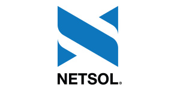

Milestones
Selected outcomes across products and teams
A short record of work that moved a product, a system, or a team forward. Each result comes from the verified experience in my résumé.

NETSOL · Enterprise financeLeading UX strategy and end-to-end product design for B2B leasing and automotive-finance platforms, translating specialist operations into clearer journeys and implementation-ready interfaces.
EnterpriseDaraz · 30M+ users reached
Shipped more than 30 marketplace features across Coins, live commerce, Influencer Hub, Search Ads, Seller Center, product pages, and gamification.
MarketplaceDaraz · 20% seller engagement
Improved seller growth experiences, campaign tools, and marketplace participation flows to make high-value actions clearer.
GrowthDaraz · 15% revenue growth
Contributed through iterative UX improvements across growth-focused product areas and regional commerce journeys.
CommerceS Design systems · 25% efficiency gain
Improved design-system efficiency with reusable UI patterns, clearer component guidance, documentation, and accessibility-minded interface updates.
SystemsInvoZone · Cross-industry products
Designed end-to-end experiences across SaaS, AI, health tech, EdTech, travel, banking, blockchain, CRM, and internal productivity platforms.
ProductContegris · 100+ touchpoints
Designed product interfaces, websites, campaigns, social content, print, exhibitions, and motion assets across enterprise and public-sector work.
DigitalContegris · Stronger digital reach
Improved LinkedIn visitor traffic by 35% and engagement by 20% through clearer brand presentation and stronger content systems.
Brand